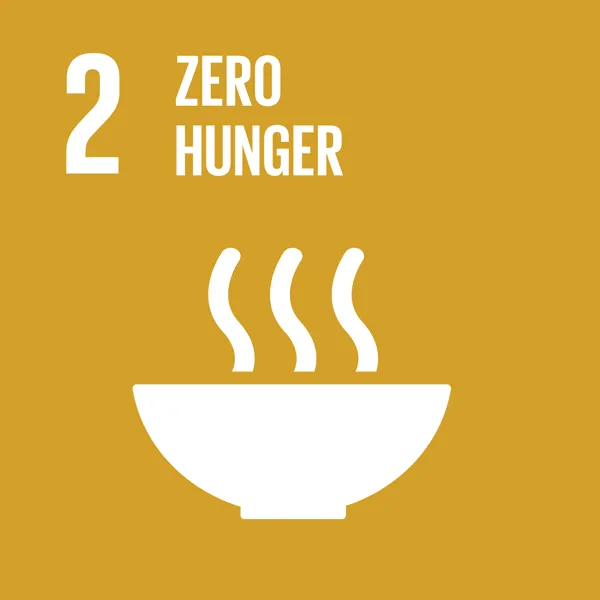
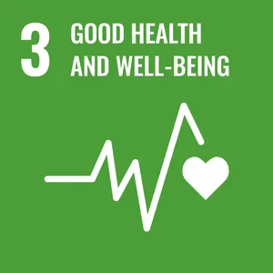
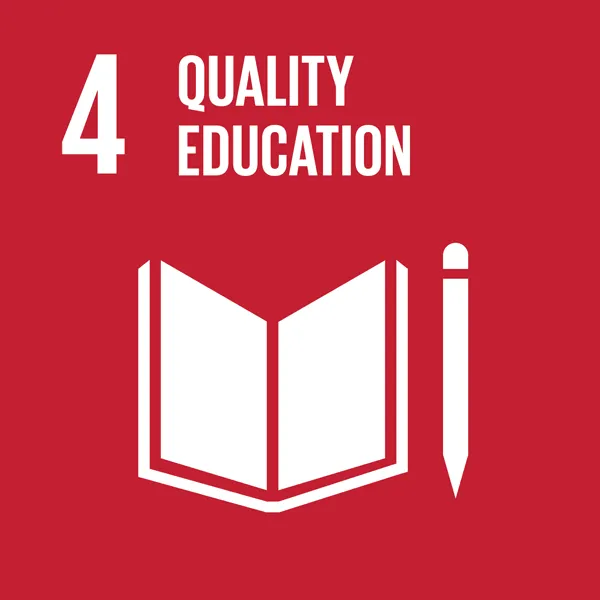
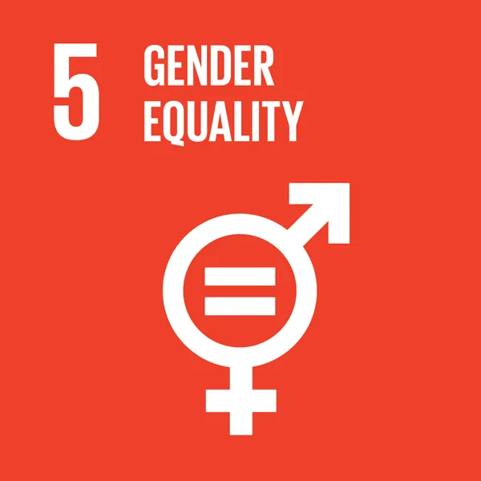
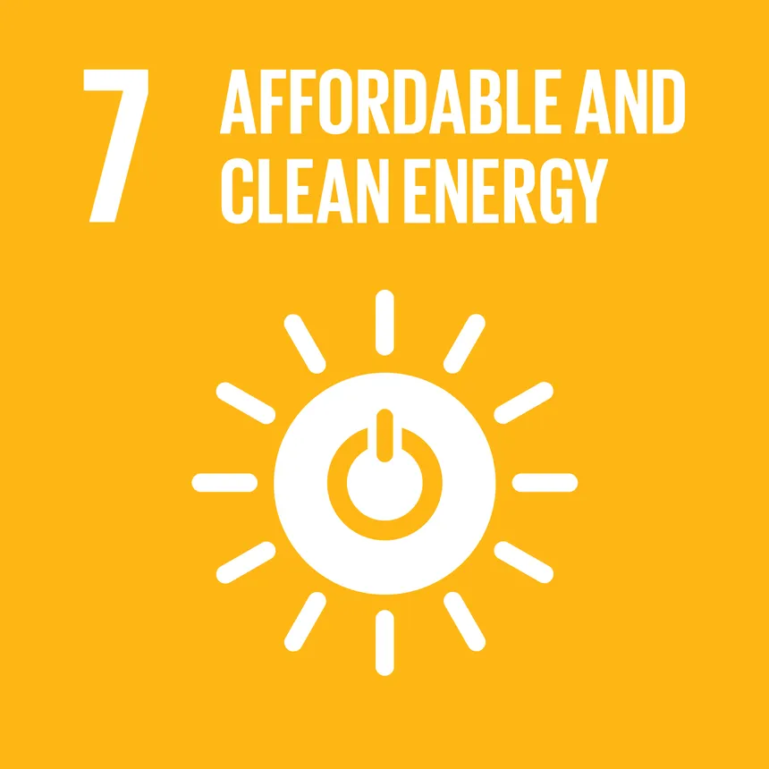
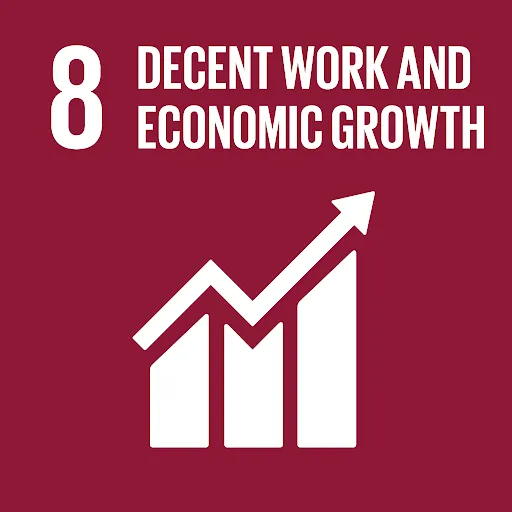
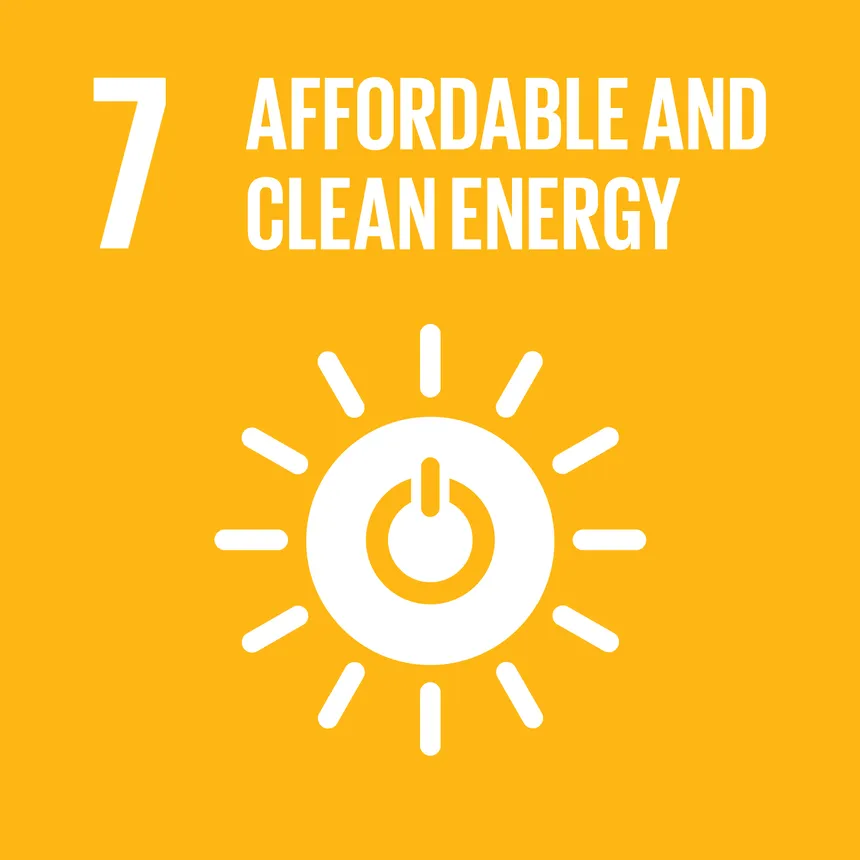
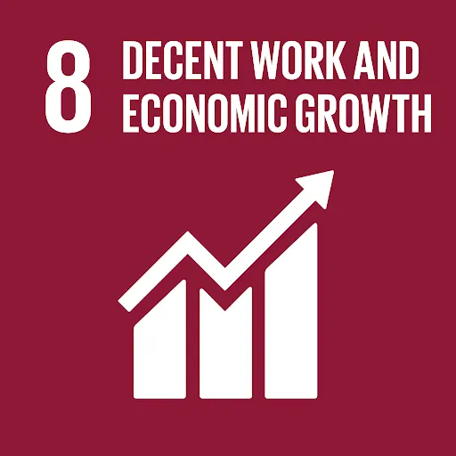
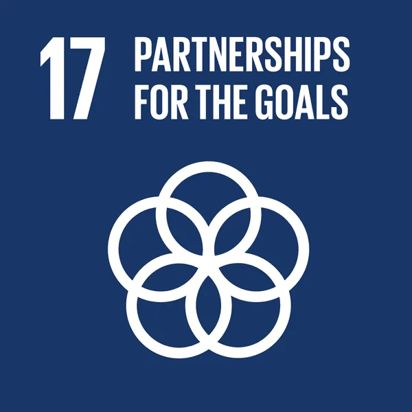
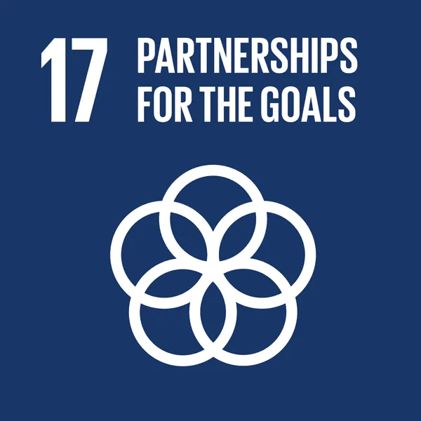

Globally, the number of people living in extreme poverty declined from 36 per cent in 1990 to 10 per cent in 2015.
But the pace of change is decelerating and the COVID-19 crisis risks reversing decades of progress in the fight against poverty.
New research published by the UNU World Institute for Development Economics Research warns that the economic fallout
from the global pandemic could increase global poverty by as much as half a billion people, or 8% of the total human population.
This would be the first time that poverty has increased globally in thirty years, since 1990.
More than 700 million people, or 10 per cent of the world population, still live in extreme poverty today,
struggling to fulfil the most basic needs like health, education, and access to water and sanitation, to name a few.
The majority of people living on less than $1.90 a day live in sub-Saharan Africa. Worldwide, the poverty rate
in rural areas is 17.2 per cent—more than three times higher than in urban areas.
For those who work, having a job does not guarantee a decent living. In fact, 8 per cent of employed workers and
their families worldwide lived in extreme poverty in 2018. One out of five children live in extreme poverty.
Ensuring social protection for all children and other vulnerable groups is critical to reduce poverty
TARGETS
1.1) By 2030, eradicate extreme poverty for all people everywhere, currently measured as people living on less than $1.25 a day
1.2) By 2030, reduce at least by half the proportion of men, women and children of all ages living in poverty in all its dimensions according to national definitions
1.3) Implement nationally appropriate social protection systems and measures for all, including floors, and by 2030 achieve substantial coverage of the poor and the vulnerable
1.4) By 2030, ensure that all men and women, in particular the poor and the vulnerable, have equal rights to economic resources, as well as access to basic services, ownership and control over land and other forms of property, inheritance, natural resources, appropriate new technology and financial services, including microfinance
1.5) By 2030, build the resilience of the poor and those in vulnerable situations and reduce their exposure and vulnerability to climate-related extreme events and other economic, social and environmental shocks and disasters
1.A) Ensure significant mobilization of resources from a variety of sources, including through enhanced development cooperation, in order to provide adequate and predictable means for developing countries, in particular least developed countries, to implement programmes and policies to end poverty in all its dimensions
1.B) Create sound policy frameworks at the national, regional and international levels, based on pro-poor and gender-sensitive development strategies, to support accelerated investment in poverty eradication actions
Click the respective images to know more about the SDG's:




 





 
